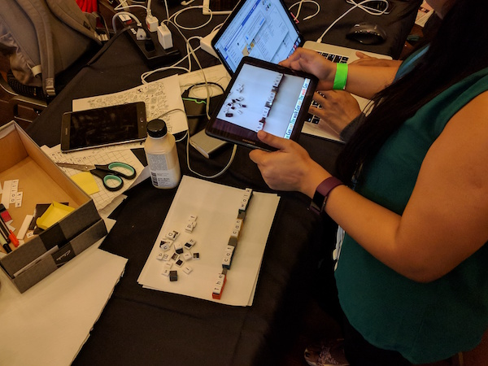
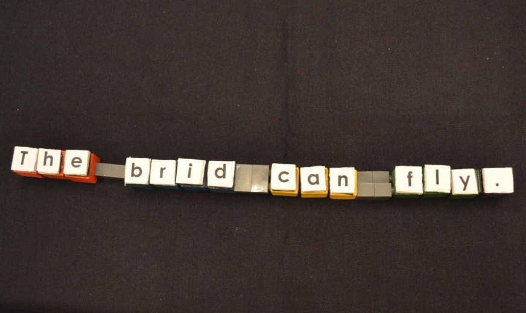

An even greater number learn English as a second language during their childhood years. This is not an easy task, and can be frustrating for kids - especially when they are unable to get immediate feedback from teachers. This app was designed with these kids in mind.
Block talks is a tangible Augmented Reality toolkit to help kids ages 7-9 learn how to read. It is intended for a semi-supervised environment. There are two modes:
1. Learning mode (see demo), children work one-on-one with an educator or parent to learn fundamental spelling skills.
2. Game mode (in development), children play with the game on their own to reinforce the skills they worked on with their parent.
Blocks Talks consists of a set of physical letters, coloured blocks with physical notch, and an application running in a tablet.
Children place letters on top of the blocks to make words and sentences. They can then check their spelling, and receive feedback using the tablet application. Feedback consists of an augmented 3D animation of the word or sentence, an audio playback of the word or sentence being read aloud, and a colour-coded sentence structure (for advanced learners).
If there are any grammar mistakes, the application will provide audio/visual feedback. We aim to create an immersive, playful literacy learning experience for children.
Block Talks adapts to children’s skills. It can recognize individual words (for e.g. “cat”, “bird”), and as the child improves it allows them to build more complex sentences (e.g. “the bird can fly”). Coloured blocks are used to represent grammatical structures (e.g: “noun”, “verb”, etc). Magnets connect the letters and blocks so that the letters can be easily place and remove the letters, and reuse them to make various sentences. Physical constraints in the blocks ensure that the blocks can only be connected in a certain order. Colour cues in both physical blocks and digital letters for each part of the sentence so that it will attract children’s attention and help them better understand English grammar.
Supervision is not always needed - Teachers are busy, and often work with many students at once. Block Talks allows the teacher to engage in learning activities with children one-on-one to develop the basics; but then children can reinforce these lessons independently. This system is also designed to enable free-play and exploration.
Tangibility matters - Research shows that children are tactile learners. Using physical objects helps to focus attention on the task, and is a more natural way for children to interact with the world than using a mouse and keyboard. Epistemic actions with tangibles is easier to organize, reorganize, and sort, and makes tasks learning easier. 2-7
Colour cue - The main benefit of using colours is to attract attention to the object, and makes it more desirable for the child to play with. Conor cues can also be used to make patterns easier to recognize, and helps individuals focus on grouped structure. 8-10
Accessible font - The typeface used in Block Talks is Century Gothic, an easy-to-read font preferred by literacy experts.
Augment reality - 3D AR animations make learning to spell fun and interactive. Some concepts are easier to convey using animations instead of static text in workbooks (for example: running vs. walking.)
Multi-sensory - Block Talks provides detailed visual/audio feedback to the children so they can improve. Research suggests that having multiple feedback mechanisms, or dual-coding, is beneficial for children’s learning. 11
Based on existing English learning tools - Block Talks was built with existing childhood English curriculums in mind. It is designed to reinforce fundamental English language concepts in a fun and engaging way.
Next steps included improving the feedback capability of the AR system, implementing the game mode, and creating a simple stand for the application so the child is free to use both hands while playing with the sentence.
1. Rello,L., Baeze-Yates, R., Dempere-Marco, L., & Saggion, H. (2013). Frequent Words Improve Readability and Short Words Improve Understandability for People with Dyslexia. In Proceeding of INTERACT'13, ser Lecture Notes in Computer Science, Kotz, P., Marsden, G., Lindgaard, G., Wesson, J., & Winckler, M Eds. Springer Berlin Heidelberg, 2013, vol. 8120, 203-219. https://doi.org/10.1007/978-3-642-40498-6_15
2. Lesley Xie, Alissa N. Antle, and Nima Motamedi. 2008. Are tangibles more fun?: comparing children's enjoyment and engagement using physical, graphical and tangible user interfaces. In Proceedings of the 2nd international conference on Tangible and embedded interaction (TEI '08). ACM, New York, NY, USA, 191-198. DOI=http://dx.doi.org.proxy.lib.sfu.ca/10.1145/1347390.1347433
3. Alissa N. Antle, Milena Droumeva, and Daniel Ha. 2009. Hands on what?: comparing children's mouse-based and tangible-based interaction. In Proceedings of the 8th International Conference on Interaction Design and Children (IDC '09). ACM, New York, NY, USA, 80-88. DOI: http://dx.doi.org.proxy.lib.sfu.ca/10.1145/1551788.1551803
4. Fan, M., Antle, A.N., Hoskyn, M. Neustaedter, C. and Cramer, E.S. 2017. Why tangibility matters: A design case study of at-risk children learning to read and spell. In Proceedings of Conference on Human Factors in Computing Systems (CHI '17), 1805-1816.
5. Antle, A.N. Fan, M., and Cramer. E.S. PhonoBlocks: A tangible system for supporting dyslexic children learning to read. In Proceedings Conference on Tangible, Embedded, and Embodied Interaction (TEI '15), ACM Press (Stanford, CA, USA, January 16-19), 533-538.
6. Antle, A.N. and Wise, A.F. 2013. Getting down to details: Using theories of cognition and learning to inform tangible user interface design, Interacting with Computers 25(1), 1-20. DOI: 10.1093/iwc/iws007
7. Fan, M., Antle, A.N. and Cramer, E.S. 2016. Design rationale: Opportunities and recommendations for tangible reading systems for children, In Proceedings of Conference on Interaction Design for Children (IDC '16), 101-112.
8. Hines, S. J. (2009). The Effectiveness of a Color-Coded, Onset-Rime Decoding Intervention with First-Grade Students at Serious Risk for Reading Disabilities. Learning Disabilities Research & Practice, 24(1), 21–32. https://doi.org/10.1111/j.1540-5826.2008.01274.x
9. Cramer, E.S., Antle, A.N. and Fan, M. 2016. The code of many colours: Evaluating the effects of a dynamic colour-coding scheme on children's spelling in a tangible software system. In Proceedings of Conference on Interaction Design for Children (IDC '16), 473-485.
10. Berninger, V. W., Abbott, R. D., Zook, D., Ogier, S., Lemos-Britton, Z., & Brooksher, R. (1999). Early Intervention for Reading Disabilities Teaching the Alphabet Principle in a Connectionist Framework. Journal of Learning Disabilities, 32(6), 491–503. https://doi.org/10.1177/002221949903200604
11. Kelly, K., & Phillips, S. (2011). Teaching Literacy to Learners with Dyslexia: A Multi-sensory Approach. London: SAGE
Block Talks was developed for EduHacks2017
Min Fan - mfan1028@gmail.com
Shubhra Sarker - ssuvro22@outlook.com
Uddipana Baishya - uddipana01@gmail.com
Amal Vincent - amalv@sfu.ca
Elgin-Skye McLaren - emclaren@sfu.ca
Alissa Antle - aantle@sfu.ca